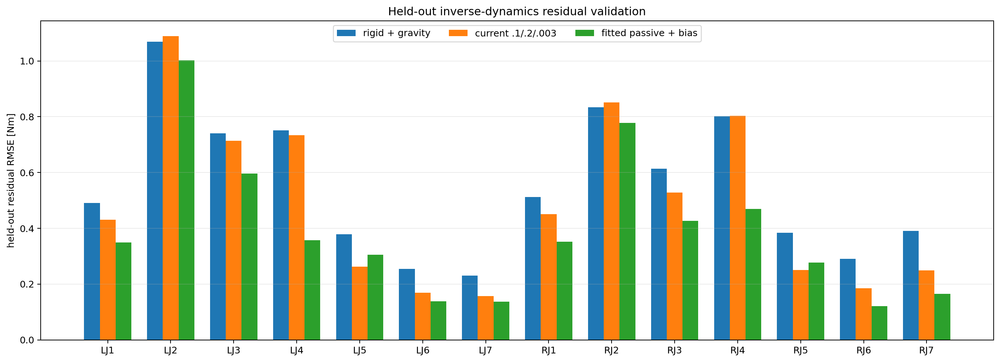
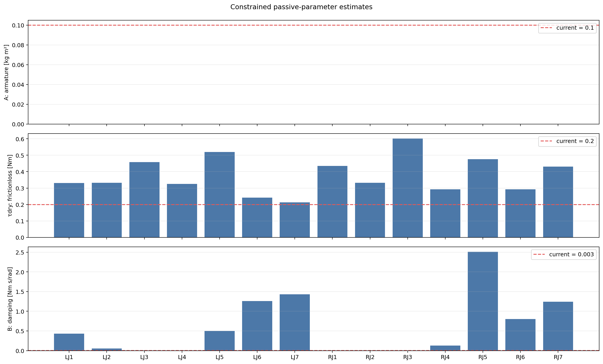

Generated 2026-09-30T17:42:43.064165+00:00.
Held-out mean RMSE: rigid+gravity 0.5528 Nm, current defaults 0.4909 Nm, fitted residual model 0.3909 Nm.
Fit: r = A qdd + tau_dry sign(qd) + B qd + bias, with non-negative A, tau_dry, and B.


| Joint | A | tau dry | B | Bias | Held RBD | Held current | Held fitted |
|---|---|---|---|---|---|---|---|
| left_fr3_joint1 | 0.00000 | 0.3305 | 0.4309 | +0.0026 | 0.4904 | 0.4310 | 0.3490 |
| left_fr3_joint2 | 0.00000 | 0.3325 | 0.0526 | -0.2577 | 1.0686 | 1.0894 | 1.0017 |
| left_fr3_joint3 | 0.00000 | 0.4587 | 0.0000 | -0.2348 | 0.7407 | 0.7131 | 0.5966 |
| left_fr3_joint4 | 0.00000 | 0.3256 | 0.0000 | +0.6286 | 0.7504 | 0.7336 | 0.3578 |
| left_fr3_joint5 | 0.00000 | 0.5197 | 0.5006 | +0.0298 | 0.3781 | 0.2617 | 0.3048 |
| left_fr3_joint6 | 0.00000 | 0.2423 | 1.2604 | +0.0441 | 0.2540 | 0.1687 | 0.1377 |
| left_fr3_joint7 | 0.00000 | 0.2136 | 1.4299 | +0.0319 | 0.2306 | 0.1575 | 0.1373 |
| right_fr3_joint1 | 0.00000 | 0.4348 | 0.0000 | +0.0948 | 0.5126 | 0.4503 | 0.3521 |
| right_fr3_joint2 | 0.00000 | 0.3324 | 0.0000 | +0.1739 | 0.8339 | 0.8517 | 0.7777 |
| right_fr3_joint3 | 0.00000 | 0.6018 | 0.0000 | +0.0083 | 0.6139 | 0.5284 | 0.4260 |
| right_fr3_joint4 | 0.00000 | 0.2924 | 0.1259 | +0.6447 | 0.8018 | 0.8036 | 0.4691 |
| right_fr3_joint5 | 0.00000 | 0.4763 | 2.5119 | -0.0966 | 0.3838 | 0.2501 | 0.2777 |
| right_fr3_joint6 | 0.00000 | 0.2930 | 0.8050 | +0.0820 | 0.2906 | 0.1844 | 0.1206 |
| right_fr3_joint7 | 0.00000 | 0.4301 | 1.2457 | -0.0159 | 0.3905 | 0.2484 | 0.1647 |
Free-motion inverse-dynamics replay only. Bias is diagnostic and is not mapped into MJCF. No MJCF parameters were changed.